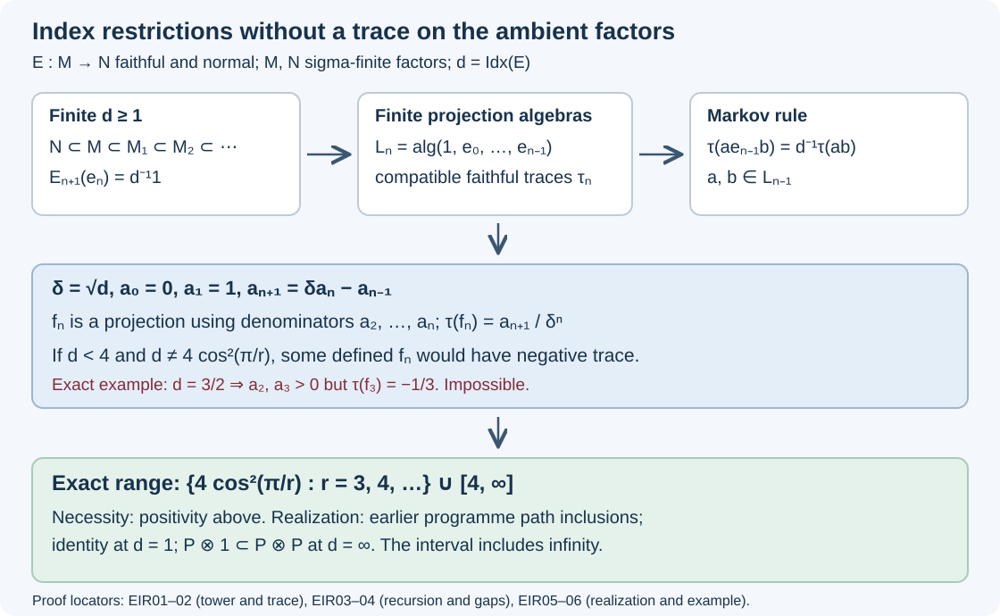

The range of the index of an expectation
An expectation between factors carries an index even when neither factor has a finite trace. Its basic-construction tower nevertheless contains finite-dimensional projection algebras with compatible faithful traces. We construct those traces, use positivity to exclude the gaps below four, and obtain all the remaining values from previously proved programme constructions.
Throughout, \(N\subseteq M\) are nonzero sigma-finite factors and \(E:M\to N\) is a faithful normal conditional expectation. We use the commutant dual and tower proved in EI01–10, and the tracial index identification in FBV06. The earlier programme construction Removing a projection produces a subfactor, Theorem 11.5 and Corollary 11.6 supplies the II₁ inclusions used for realization. These are links to written programme proofs, with their stated prerequisites.
The scalar and its endpoint
By EI01 and EI09, the commutant dual has
\[ E'(1)=d1,\qquad 0<d\leq\infty, \tag{EIR.1} \]and the scalar is independent of the faithful normal representation. Write \(d=\operatorname{Idx}(E)\). Choose a faithful normal state \(\varphi\) on \(N\), and use the faithful state \(\psi=\varphi\circ E\) on \(M\). In its GNS space let \(e\) be the orthogonal projection onto \(\overline{N\Omega}\). The dual basic-construction weight \(\widehat E\) satisfies
\[ \widehat E(e)=1,\qquad \widehat E(1)=d1 \tag{EIR.2} \]by EI04–06. Positivity and \(e\leq1\) give \(d\geq1\).
If \(d=1\), additivity gives \(\widehat E(1-e)=0\), and faithfulness gives \(e=1\). The compression formula \(ex\Omega=E(x)\Omega\) then implies \((x-E(x))\Omega=0\). Faithfulness of \(\psi\) makes \(\Omega\) separating, so \(x=E(x)\) for every \(x\in M\). Thus \(N=M\) and \(E\) is the identity. Conversely, for the identity inclusion \(e=1\), and (EIR.2) gives index one.
No normalization by an infinite scalar is used. We assume \(d<\infty\) until the realization discussion.
A trace inside a possibly nontracial tower
Put \(\lambda=d^{-1}\). The tower in EI10 consists of factors \(M_{-1}=N,M_0=M,M_1,\ldots\), faithful normal expectations \(E_n:M_n\to M_{n-1}\), and projections \(e_n\in M_{n+1}\). Its identities are
\[ \begin{aligned} e_nxe_n&=E_n(x)e_n &&(x\in M_n),\\ E_{n+1}(e_n)&=\lambda1,\\ e_ie_j&=e_je_i &&(|i-j|\geq2),\\ e_ie_je_i&=\lambda e_i &&(|i-j|=1). \end{aligned} \tag{EIR.3} \]The embeddings are faithful. Define \(L_0=\mathbb C1\), and let \(L_n\) be the unital algebra generated by \(e_0,\ldots,e_{n-1}\) in \(M_n\).
Word reduction. One has
\[ L_n=L_{n-1}+\operatorname{span}(L_{n-1}e_{n-1}L_{n-1}). \tag{EIR.4} \]Here these are already finite-dimensional star algebras. For \(n=1\), a polynomial in the projection \(e_0\) lies in \(\mathbb C1+\mathbb Ce_0\). Inductively, between two occurrences of the newest projection, reduce the intervening word using the preceding instance of (EIR.4). Its summands either lie in \(L_{n-2}\), which commutes with the newest projection, or have the form \(a e_{n-2}b\) with \(a,b\in L_{n-2}\). In the first case the two newest projections collapse to one; in the second the neighboring relation replaces their sandwich by \(\lambda ab e_{n-1}\). Each replacement reduces the number of newest occurrences. This proves (EIR.4), and bounds the new dimension by \(k+k^2\) if the preceding dimension is \(k\).
Set \(\psi_0=\psi\) and \(\psi_n=\psi_{n-1}\circ E_n\). These are faithful normal states. Let \(\tau_n=\psi_n|_{L_n}\). The states agree on preceding levels, and (EIR.4) and bimodularity give
\[ E_n(L_n)\subseteq L_{n-1},\qquad \tau_n(ae_{n-1}b)=\lambda\tau_{n-1}(ab) \quad(a,b\in L_{n-1}). \tag{EIR.5} \]We now prove that every \(\tau_n\) is tracial. The first level is commutative. Suppose the assertion holds through level \(n-1\), with \(n\geq2\). Products of two old elements satisfy cyclicity by induction. For one old element and one term \(a e_{n-1}b\), (EIR.5) and cyclicity of \(\tau_{n-1}\) give cyclicity directly. For two new terms put \(e=e_{n-1}\) and \(F=E_{n-1}|_{L_{n-1}}\). Compression and (EIR.5) give
\[ \begin{aligned} \tau_n((aeb)(ced)) &=\lambda\tau_{n-1}(daF(bc))\\ &=\lambda\tau_{n-2}(F(da)F(bc)). \end{aligned} \tag{EIR.6} \]The second equality uses \(\tau_{n-1}=\tau_{n-2}\circ F\) on \(L_{n-1}\) and \(L_{n-2}\)-bimodularity. Interchanging the two terms reverses the two factors in the last trace; the value is unchanged. Bilinearity and (EIR.4) finish the induction.
Thus the algebraic union of the \(L_n\) has a normalized positive trace \(\tau\), faithful on every finite level, with the Markov rule (EIR.5). This trace is determined by \(\lambda\): use (EIR.4), cyclicity and (EIR.5) inductively to evaluate every word from \(\tau(1)=1\). In particular its values do not depend on the initial choice of \(\varphi\). We have constructed traces on the projection algebras; we have not asserted that the ambient \(M_n\) are finite.
Recursive projections and their trace
Write \(\delta=\sqrt d\), and reindex the scaled generators as \(U_i=\delta e_{i-1}\), \(i\geq1\). Then
\[ U_i^*=U_i,\quad U_i^2=\delta U_i,\quad U_iU_{i+1}U_i=U_i, \tag{EIR.7} \]with distant commutation. Define numbers
\[ a_0=0,\quad a_1=1,\quad a_{n+1}=\delta a_n-a_{n-1}. \tag{EIR.8} \]When the required denominators are nonzero, set
\[ f_1=1,\qquad f_{n+1}=f_n-\frac{a_n}{a_{n+1}}f_nU_nf_n. \tag{EIR.9} \]For every constructed \(f_n\), it is a selfadjoint projection in \(L_{n-1}\), annihilates \(U_1,\ldots,U_{n-1}\), and satisfies
\[ f_nf_{n-1}=f_n\ (n\geq2),\qquad \tau(f_n)=\frac{a_{n+1}}{\delta^n}. \tag{EIR.10} \]Here is the algebraic induction, including the identities needed at a possible first sign change. The first nontrivial projection is \(f_2=1-\delta^{-1}U_1\). At a later step let \(Q=f_nU_nf_n\) and \(c=a_{n-1}/a_n\). Expand \(f_n=f_{n-1}-c f_{n-1}U_{n-1}f_{n-1}\). Since \(U_n\) commutes with \(f_{n-1}\), its two-sided sandwich is
\[ U_nf_nU_n=(\delta-c)f_{n-1}U_n =\frac{a_{n+1}}{a_n}f_{n-1}U_n. \tag{EIR.11} \]The neighboring relation in (EIR.7) gives the second term of this computation. Multiplying by \(f_n\), and using \(f_nf_{n-1}=f_n\), gives
\[ Q^2=\frac{a_{n+1}}{a_n}Q,\qquad U_nf_nU_nf_n=\frac{a_{n+1}}{a_n}U_nf_n. \tag{EIR.12} \]Consequently (EIR.9) is a selfadjoint idempotent, is fixed by multiplication by \(f_n\), and is annihilated by \(U_n\). Earlier generators annihilate both terms. This proves all the algebraic assertions. For the first step the same calculation uses \(U_1^2=\delta U_1\) directly.
Traciality and the Markov rule give
\[ \tau(f_nU_nf_n)=\delta^{-1}\tau(f_n). \tag{EIR.13} \]Starting from \(\tau(f_1)=1=a_2/\delta\), equations (EIR.8–9) yield
\[ \tau(f_{n+1}) =\tau(f_n)\left(1-\frac{a_n}{\delta a_{n+1}}\right) =\frac{a_{n+2}}{\delta^{n+1}}. \tag{EIR.14} \]This proves the trace assertion. The construction of \(f_n\) uses \(a_2,\ldots,a_n\) as denominators; its trace involves the next number \(a_{n+1}\). That distinction drives the restriction.
No index can lie in a gap below four
Suppose \(1\leq d<4\). Write \(\delta=2\cos\theta\) with \(0<\theta\leq\pi/3\). Sine addition and the initial values in (EIR.8) give
\[ a_n=\frac{\sin(n\theta)}{\sin\theta}. \tag{EIR.15} \]If \(\pi/\theta\) is not an integer, let \(m\) be the least integer with \(m\theta>\pi\). All \(a_1,\ldots,a_{m-1}\) are strictly positive, while \(a_m<0\): indeed \(m\theta<\pi+\theta\leq4\pi/3<2\pi\).
The recursion therefore constructs the projection \(f_{m-1}\) using strictly positive denominators, but (EIR.10) gives
\[ \tau(f_{m-1})=\frac{a_m}{\delta^{m-1}}<0. \tag{EIR.16} \]This contradicts positivity. Hence \(\theta=\pi/r\) for an integer \(r\geq3\). Including finite \(d\geq4\) and infinite \(d\), we have proved
\[ \operatorname{Idx}(E)\in \left\{4\cos^2\frac{\pi}{r}:r=3,4,\ldots\right\}\cup[4,\infty]. \tag{EIR.17} \]The right-hand interval is extended to include infinity.
At a discrete parameter, all the denominators through \(a_{r-1}\) are positive and \(a_r=0\). Thus \(f_{r-1}\) is a projection of trace zero. Faithfulness on its finite level gives \(f_{r-1}=0\). There is no division by \(a_r\). For \(r=3\) this says \(f_2=1-U_1=0\), consistent with the identity inclusion.
Every listed value is attained
Necessity does not establish realization. The earlier programme proof Theorem 11.5 and Corollary 11.6 constructs separable approximately finite-dimensional II₁ inclusions of every finite index in (EIR.17). Its finite path model gives \(4\cos^2(\pi/r)\), \(r\geq4\); its infinite path model gives every \(d\geq4\); and the identity inclusion gives one. The theorem identifies the actual basic construction and computes its canonical trace, rather than inferring index from projection relations alone. Its path-matrix and factoriality proofs are in the preceding programme lessons linked there.
For each such inclusion, its faithful normal trace-preserving expectation exists by TA03–04. The equality of the commutant-dual index with the tracial dimension index, proved in FBV06, transfers the constructed value to \(\operatorname{Idx}(E)\). The factors are sigma-finite because they carry faithful normal tracial states.
For infinity, take any diffuse II₁ factor \(P\) with trace \(\tau\), and
\[ N=P\otimes1\subset M=P\mathbin{\overline\otimes}P,\qquad E=\operatorname{id}\otimes\tau. \tag{EIR.18} \]The infinite-index computation for this example is proved in FBV07: the \(N\)-module \(L^2(M)\) has an infinite orthonormal multiplicity in the second tensor coordinate, so its canonical dimension is infinite. FBV06 identifies that value, including infinity, with \(E'(1)\). Both factors again have faithful normal tracial states.
This proves that (EIR.17) is the exact range of indices of faithful normal expectations between sigma-finite factors. Realization here means that some such pair and expectation have the specified value. It does not assert that every fixed inclusion has all these expectations.
Small indices and a quantitative gap witness
The first values of the discrete part are
\[ 1,\quad2,\quad\frac{3+\sqrt5}{2},\quad3, \quad 4\cos^2(\pi/7),\quad2+\sqrt2,\ \ldots \tag{EIR.19} \]They increase strictly to four, since \(\pi/r\) decreases to zero and cosine increases on this sequence. In particular a proper expected inclusion has index at least two, by EIR01 and EIR04.
The excluded value \(d=3/2\) illustrates why two projections alone do not suffice. Its recurrence starts
\[ a_2=\delta,\quad a_3=d-1=\tfrac12,\quad a_4=\delta(d-2)=-\tfrac{\delta}{2}. \tag{EIR.20} \]The projection \(f_3\) would be defined, but its Markov trace would equal
\[ \tau(f_3)=\frac{a_4}{\delta^3} =\frac{d-2}{d}=-\frac13. \tag{EIR.21} \]On the other hand the two rank-one projections
\[ p=\begin{pmatrix}1&0\\0&0\end{pmatrix},\qquad q=\begin{pmatrix}2/3&\sqrt2/3\\ \sqrt2/3&1/3\end{pmatrix} \tag{EIR.22} \]satisfy \(pqp=(2/3)p\) and \(qpq=(2/3)q\). Indeed \(q\) is the projection onto \((\sqrt{2/3},\sqrt{1/3})\). Thus the two neighboring projection relations at this parameter have a concrete positive representation. The obstruction arises when the consistent expectation tower supplies the finite-level Markov traces required for (EIR.21).
What carries the positivity argument

Figure EIR.1. The upper route is (EIR.1–6); the middle route is the recursive projection and trace formula (EIR.8–16). The example \(d=3/2\) has \(a_2,a_3>0\) and \(\tau(f_3)=-1/3\), as computed in EIR06. The lower route separates necessity from the earlier path construction and the infinite tensor example used in EIR05. This is a proof diagram, not a spectral or numerical simulation. The SVG is the reproducible drawing source.
The finite-level trace was constructed from the expectations as well as their projections. We do not assume that an arbitrary representation of the same abstract projection relations carries that trace. This distinction avoids transferring a tracial hypothesis to a type III ambient algebra. Every use of faithfulness above is localized: the scalar endpoint uses faithfulness of the dual weight, and the discrete cutoff uses faithfulness of the state restricted to a finite projection algebra.
The comparison target is Takesaki, Theory of Operator Algebras III, XIX.2, Exercise 5(f), printed page 440. The range agrees with the II₁ range, with \(r=n+1\) converting its indexing to (EIR.17). The earlier general-factor route is One expectation, one index in every representation, Theorem 22.5. Our proof of necessity exhibits the finite-level Markov traces directly. Principal graphs and classification of individual inclusions are separate questions.
Exercises with complete solutions
1. The zero denominator. At \(d=2\), locate the first zero in the recurrence and explain the correct stopping point.
Solution. Here \(\delta=\sqrt2\), \(a_2=\sqrt2\), \(a_3=1\), and \(a_4=0\). The projection \(f_3\) uses only \(a_2,a_3\) and has trace \(a_4/\delta^3=0\), hence vanishes. Formula (EIR.9) for \(f_4\) would divide by zero and is not used.
2. Initial state. Why do different faithful states on \(N\) give the same values on words in the Jones projections, even though their extensions to \(M_n\) need not agree?
Solution. Every word reduces by (EIR.4) to an old term or a sum of \(a e_{n-1}b\). Its trace is determined by the old trace and \(\lambda\tau_{n-1}(ab)\). Induction from the scalar value one determines all finite-word values from \(\lambda\). This is an assertion about the projection subalgebras, not all of \(M_n\).
3. Positivity in the next algebra. In (EIR.13), in which finite-level algebra are the three operators \(f_n,U_n,f_nU_nf_n\) considered?
Solution. The first lies in \(L_{n-1}\subseteq L_n\), and the latter two lie in \(L_n\). The compatible trace \(\tau_n\) is tracial and positive on all of \(L_n\), so cyclicity and the newest-generator Markov rule both apply there.
4. A proper inclusion below two. Could a faithful normal expectation on a proper inclusion have index \(7/4\)?
Solution. No. The discrete list begins with one and two and has no value strictly between them; the continuous part starts at four. Index one itself forces equality of the factors by EIR01.
5. Where sigma-finiteness enters. Identify the role of this hypothesis and why the proof does not claim more.
Solution. It supplies a faithful normal state on \(N\). Composing with the expectation gives the separating GNS vector and permits the state-based tower of EI10, repeated at each stage. The scalarity and representation comparison in EI01 and EI09 have greater generality, but those facts alone do not extend the state-based construction to every non-sigma-finite inclusion. The theorem here retains the source's sigma-finite hypothesis.
6. Which range is proved? Does the argument identify the minimum index over all expectations on a given inclusion?
Solution. No. It constrains the index of each specified faithful normal expectation and proves global realization by suitable inclusions. Neither minimization on a fixed inclusion nor uniqueness of its expectation is needed or asserted.